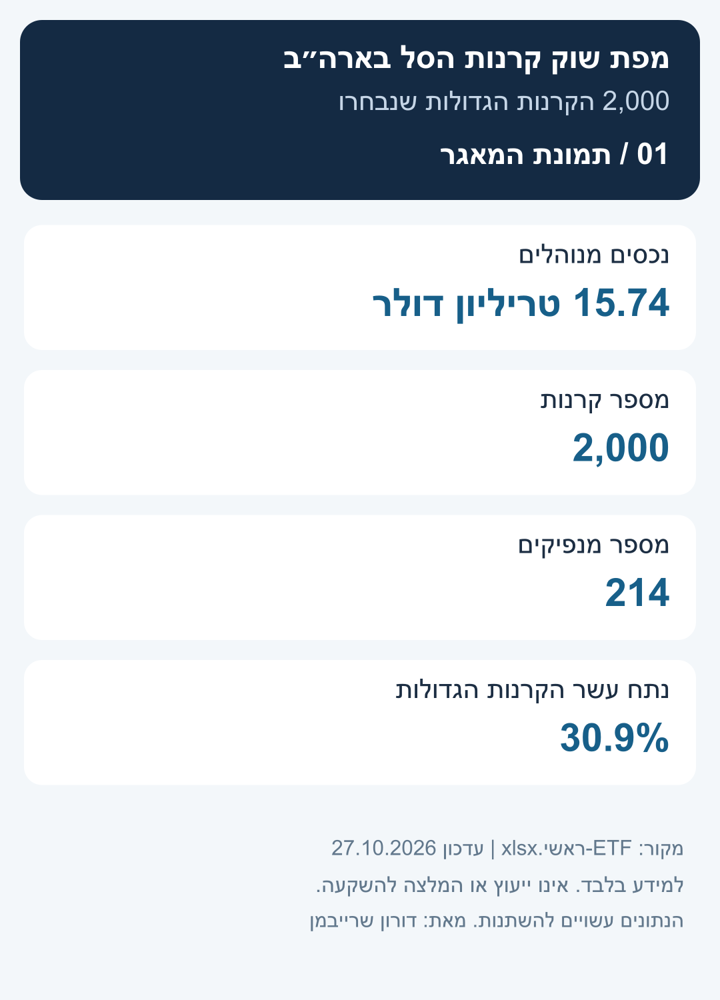
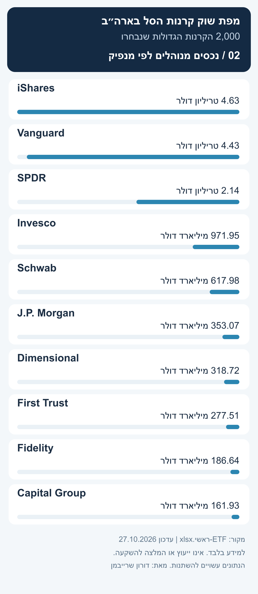
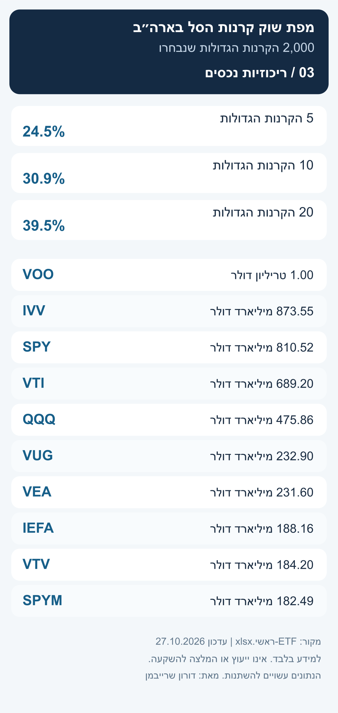
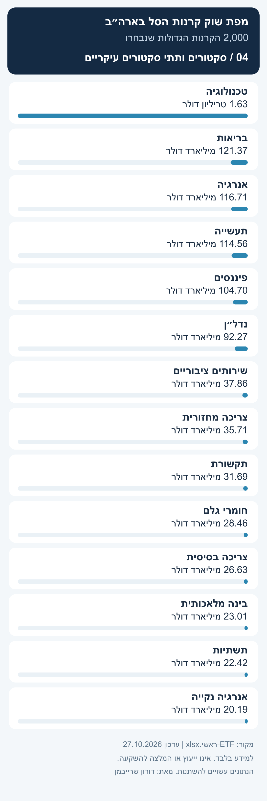
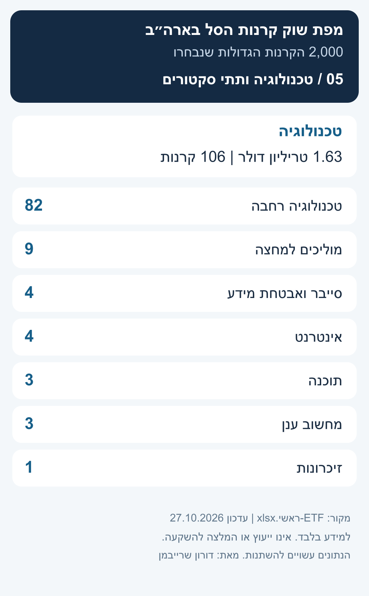
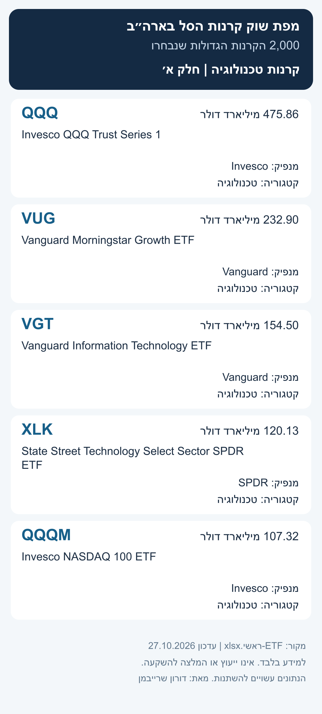
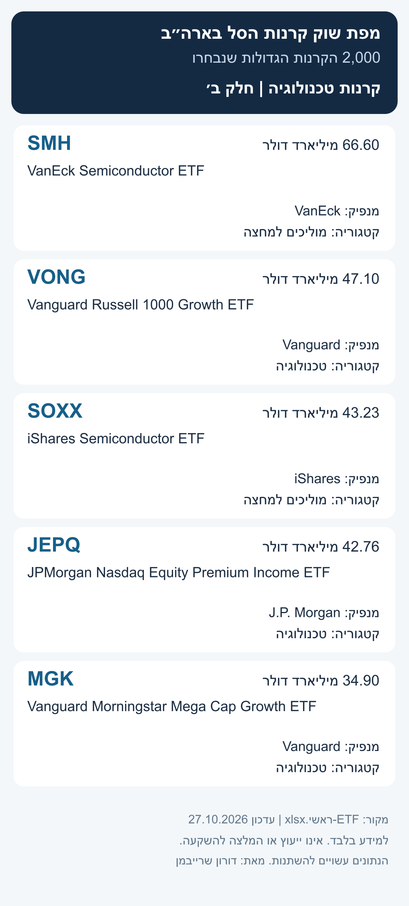

הורדת תמונה 1מפת שוק קרנות הסל בארה״ב
גרסה קריאה לנייד, מחולקת לפי סעיפים. לשיתוף באיכות המקורית, הורידו את התמונה ושלחו אותה כקובץ או כמסמך.

הורדת תמונה 2
הורדת תמונה 3
הורדת תמונה 4
הורדת תמונה 5
הורדת תמונה 6
הורדת תמונה 7